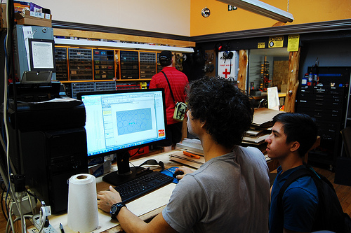
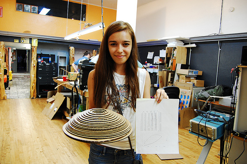
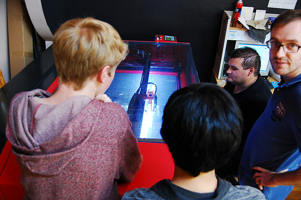

On Saturday and Sunday, Hamilton High School students got a valuable lesson in working smarter, not harder. Three weeks ago in calculus class, members of the Hamilton First Robotics Team 698, mentored by our own Tim M. and Austin K., were each assigned a mathematical function. Their mission was to graph it, rotate it around the X- or Y-axis and create a model of the resulting 3D shape.
Students in the calculus class not on the team were presumably left cutting out cross-section shapes by hand, while the members of the Hamilton team, and one of their very luck friends, headed straight for the laser cutter at the lab. (For anyone wondering, this shortcu. I mean, innovation, was approved by their professor.)
Here they are working on creating shapes in SolidWorks, which Austin and Tim then converted into laser files and cut out of cardboard.

Some of the models were made of more than 50 pieces. Here's Toni's nearly finished shape derived from f(x) = -2x^2+6x+1, g(x) = x+.2x^3 wrapped around the Y-axis. It's not glued together yet in this picture so she couldn't tip it, but it should be oriented sideways.

Hours of work were reduced to minutes, about 30 on average, and a good thing too, because the projects are due today.
